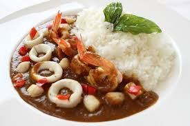

そもそもカレーってなぁに？

カレーとは、各種スパイスで具材を煮込んだもので、インドのタミール語のソースの意のカリ（Kari） から転じたという説や、「おいしいもの」という意味で使われているヒンズー語の「ターカリー」（turcarri） から「ターリ」（turri）に転じ、英名になったという説から来ています。
主にインドを中心とした、熱帯 亜熱帯地方でスパイシーな料理を総称して英語で＜カレー＞と呼ぶようになったのです。
いろいろなレシピ
●カレーライス ●カレーうどん ●焼きカレー
カレーの歴史
もともとインドは、イギリスの植民地でした。インドで作られていた料理をイギリス本国に持ち帰り、一種の料理として公開しました。
インドのカレーはスパイスの分量が決まっておらず、二度と同じ味は作れないと言われていましたが、イギリスに渡って少し後に、
C&B社がカレー粉の作成に成功したことで誰でも同じ味が再現できるようになりました。
ちなみに、イギリスから日本にカレーがやってきたのは明治の初め（明治４年ごろ）と言われており、牛肉の食べ方の一種として
高級料理として広まりました。その後、時代が進むにつれて学校給食で提供されたり、定食屋のメニューとして採用されるなどで大衆化していったそうです。
そして、1954年の高度経済成長期に入った時代に、インスタンスと食品の進化によって、固形のカレールウが誕生しました。
その後、80年代に入り、学校給食などでも提供されるなど、世間に広く浸透していきました。
このようにして、日本にカレーが広まっていき私たちの身近な食品の一部として
大成していきました。
種類
★日本のカレー.......とろみのある濃厚なソースで、ジャガイモや玉ねぎなどが入っている
★インドのカレー.......様々なスパイスを調合して作るため、少し辛みが強い
★タイのカレー.......辛さと甘さが混在した、エスニックな味わい
カレーに使われている主なスパイス
※この他にもいろんなスパイスがあります。
- ターメリック
- クミン
- コリアンダー
- ガラムマサラ
- カルダモン
鮮やかな黄色をカレーに与え、ほろ苦い風味が特徴
やや辛い風味があり、種子として使うことも、粉末として使うこともある
甘くてほのかに柑橘系の風味があり、カレーに深みを与える
複数のスパイスを混ぜ合わせたもので、仕上げに使うことが多い
甘くて芳香があり、グリーンカルダモンとブラックカルダモンの2種類がよく使われる
人気カレーランキング
- カレーライス 定番中の定番。誰もが知っている味。誰もが好きなはず。
- チキンカレー 鶏肉の出汁を使ったカレー。奥深い味わいで、普通のカレーより少し特別感を感じる。
- ビーフカレー 牛肉をメインとした少し高級感のあるカレー。牛肉とカレーの見事なハーモニーが食欲を増進させる。
- ベジタブルカレー 野菜好きの方にはたまらないカレー。野菜のうまみがしっかり入った素晴らしいカレー。
- シーフードカレー  海の幸とカレーの奇跡のコラボレーション。魚介特有のうまみが凝縮された至高のカレー。